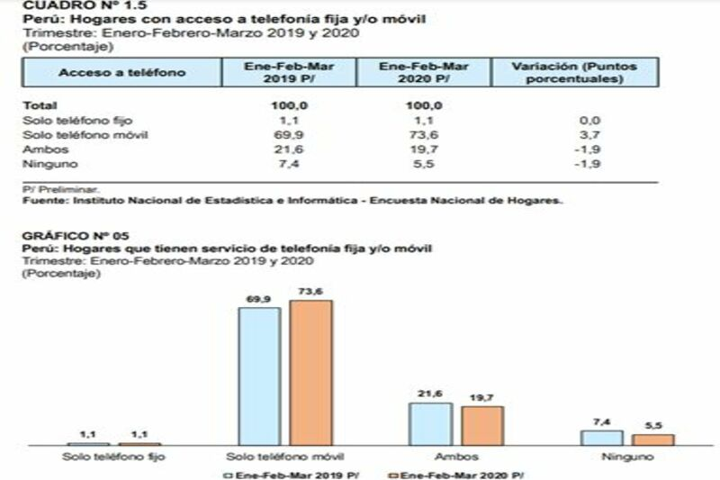
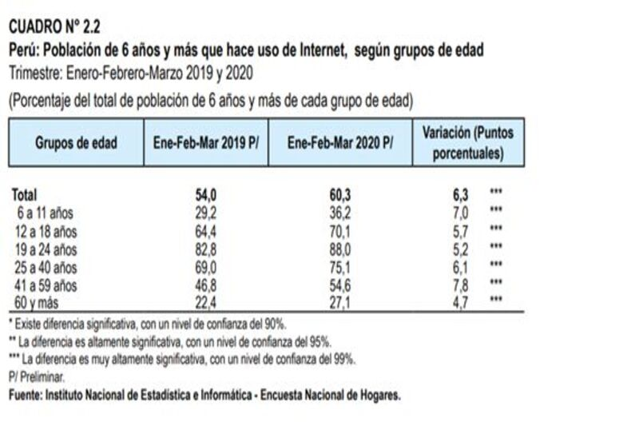

A continuación se mostrará la información recolectada para la semana 1
Actualmente, la rehabilitación no está coordinada, los pacientes se manejan en forma fragmentada al salir de terapia intensiva. El 70% de los pacientes son dados de alta a su casa sin el planteo de una rehabilitación y desconociendo los problemas específicos que deberán tratar a partir de ese momento. Pocos estudios han evaluado intervenciones para mejorar los resultados después de UCI. Muchos pacientes son dados de alta sin comprender realmente sus limitaciones, la gravedad de las mismas y las expectativas de recuperación. Son dados de alta sin el equipamiento necesario y con acceso limitado a los centros de rehabilitación.
-Mejora la escritura en un 86% más grande y es más suave el trazo.
-No hay un previo estudio de mercado. Alrededor del 70 % de los pacientes hospitalizados en España en una Unidad de Cuidados Intensivos por coronavirus tiene 60 años o una edad superior, según los últimos datos actualizados del Centro de Coordinación de Alertas y Emergencias Sanitarias. Mientras aumenta el grupo de edad, lo hace también el número de casos positivos, ingresos y fallecimientos. Así, si entre las personas de 0 a 19 años hay 350 casos de entre 18.950 (1,84%) y un único fallecimiento (0,12%), en el grupo de mayores de 70 años los infectados son 6.152 (un 32,44%) y los fallecidos 705 (el 87,57% del total de muertes). Y la misma proporción siguen los datos en lo referente a hospitalizaciones. Mientras los menores de 19 años no llegan al 1%, los mayores de 60 años suponen más del 68% del total.

I am a French Designer. Facilis ipsum reprehenderit nemo molestias. Aut cum mollitia reprehenderit. Eos cumque dicta adipisci architecto culpa amet. Dignissimos asperiores vitae velit veniam totam fuga molestias accusamus alias autem provident. Odit ab aliquam dolor eius.

I am a French Designer. Facilis ipsum reprehenderit nemo molestias. Aut cum mollitia reprehenderit. Eos cumque dicta adipisci architecto culpa amet. Dignissimos asperiores vitae velit veniam totam fuga molestias accusamus alias autem provident. Odit ab aliquam dolor eius.
Pluma terapéutica para enfermos de Parkinson, diseñado para combatir la micrografía presente en los pacientes, usa vibraciones de alta frecuencia para estimular los músculos claves de la mano.
-El cargado es por inducción.
-Mejora la escritura en un 86% más grande y es más suave el trazo.
-No hay un previo estudio de mercado.
-Es aún un prototipo.
Para comenzar, se debe comprender que las enfermedades respiratorias crónicas (ERC)y su impacto socioeconómico están enlazados por lo que es necesario analizar qué hace el Estado para garantizar el derecho a la salud de las personas afectadas y si se ve reflejado en equidad en cuanto a oportunidades y calidad de servicios.(1) La importancia de las ERC deriva en su alta tasa de morbilidad, mortalidad, utilización de recursos sanitarios y costos indirectos en fármacos, visita a médicos, entre otros. Debido a estos motivos es que se altera la calidad de vida de la gente que padece de algún ERC y no alcanza a ver un futuro prometedor en su vida. La OPS indica una incidencia en cambios de hábitos alimenticios, estilo de vida sedentario y aumento de envejecimiento de la población, unidos a fumar (2), según la Asociación Latinoamericana del Tórax en América Latina el tabaquismo es el principal causante de ERC seguido de humo de leña en la población rural y en ciertos casos exposiciones ocupaciones y deficiencia de alfa-1 antitripsina (3). Las ERC impiden el correcto funcionamiento de estructuras corporales, deficiencias, límites en la capacidad y no poder participar en actividades que incapacitan al individuo y lo aíslan de la sociedad (4). En cuanto a las limitaciones, se ven impedidas actividades simples del diario que restringen al individuo en su participación social recreativa o de trabajo. Mientras que con discapacidad se entiende una situación que afecta en la eficacia de realización de alguna acción.Ambas se juntan y en el contexto sociocultural se vuelve una desventaja con el entorno del afectado, la posibilidad de cumplir un rol laboral y social con serias implicaciones en el nivel emocional.(5) -El cargado es por inducción.
El contexto que la pandemia ocasionada por el COVID-19 ha dejado un receso y una caida del PBI(Producto Bruto Interno) del 12% ,26,64 miles de millones desoles,el cual a generado una crisis que no son cuantificables por el momento
-Es aún un prototipo.
-El cargado es por inducción.
-Mejora la escritura en un 86% más grande y es más suave el trazo.
- Instituto Peruano de Economía. 2020. Décimo sexto informe: análisis del impacto económico del COVID-19 en el Perú. Lima, Perú.
-Duran Palomino, Diana & Vargas Pinilla, Olga. (2007). La enfermedad respiratoria crónica: Reflexiones en el contexto del sistema de salud colombiano. Retrieved in September 2020, from https://www.redalyc.org/pdf/562/56250211.pdf
-Organización Panamericana de la Salud. Enfermedades crónicas. Disponible en www.paho.org Consultado enero 2006.
-Grupo de trabajo de la Asociación Latinoamericana del Tórax (ALAT). Actualización de las recomendaciones ALAT sobre la exacerbación infecciosa de la EPOC Arch Bronconeumol 2004; 40: 315-325.
-Organización mundial de la salud. Clasificación Internacional del funcionamiento, de la discapacidad y de la salud. Grupo de Clasificación, evaluación, encuestas y terminología. Ginebra, Suiza. Diciembre de 2000.
- Consejería Presidencial para la Política Social. Plan Nacional de atención a las personas con discapacidad. Manual operativo. Sep. 2002, pp. 13-14.